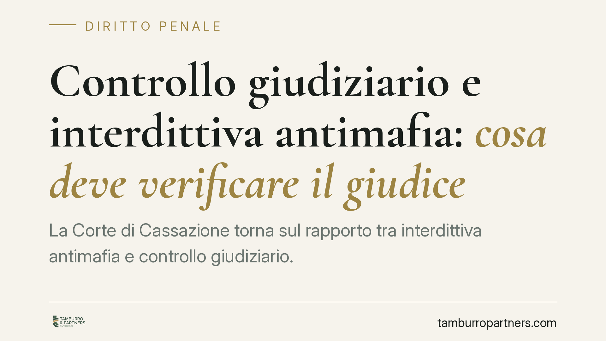

Controllo giudiziario e interdittiva antimafia: cosa deve verificare il giudice
La Corte di Cassazione torna sul rapporto tra interdittiva antimafia e controllo giudiziario. Il giudice non può limitarsi a recepire la valutazione prefettizia: deve accertare l'occasionalità dell'agevolazione mafiosa e la concreta recuperabilità dell'impresa. Una precisazione che sposta il baricentro dal passato dell'azienda al suo futuro produttivo.

Il caso
Un'impresa individuale colpita da informazione interdittiva antimafia chiedeva l'ammissione al controllo giudiziario. La Corte territoriale rigettava l'istanza, appoggiandosi in sostanza sul contenuto dell'interdittiva. Il difensore ricorreva per cassazione, lamentando che il giudice non avesse svolto la valutazione autonoma richiesta dalla misura.
La Corte di Cassazione, sez. II penale, ha accolto l'impostazione difensiva. Va segnalato che gli estremi completi della pronuncia (numero e data di deposito) devono essere verificati alla pubblicazione: si consiglia di non citare la decisione senza il numero di sentenza definitivo.
Inquadramento normativo
Il controllo giudiziario è disciplinato dall'art. 34-bis del d.lgs. 6 settembre 2011, n. 159 (Codice antimafia). In particolare, il comma 6 consente all'impresa destinataria di un'informazione interdittiva antimafia di richiedere al tribunale competente l'applicazione della misura, entro trenta giorni dalla comunicazione dell'interdittiva e contestualmente all'impugnazione del provvedimento davanti al giudice amministrativo.
È importante chiarire la catena normativa. Il comma 6 rinvia infatti ai presupposti dell'art. 34, comma 1, del medesimo decreto. È lì che risiede il requisito dell'occasionalità dell'agevolazione mafiosa: la misura presuppone che l'agevolazione alle attività mafiose sia episodica e non strutturale, tale da non giustificare misure più severe come l'amministrazione giudiziaria. Il requisito, dunque, non è scritto nell'art. 34-bis in sé, ma discende dal richiamo che il comma 6 opera all'art. 34, comma 1.
Perché la distinzione conta
L'interdittiva antimafia risponde a una logica preventiva e amministrativa: fotografa un rischio di infiltrazione sulla base di elementi indiziari, con finalità di tutela anticipata dell'economia legale.
Il controllo giudiziario risponde invece a una logica diversa. Non guarda solo al passato dell'impresa, ma formula una prognosi sul suo futuro: verifica se l'azienda sia bonificabile, cioè se possa essere riportata alla legalità attraverso il monitoraggio giudiziario. Sono due valutazioni non sovrapponibili.
Da qui il principio ribadito dalla Corte: il giudice non può appiattirsi sul contenuto dell'interdittiva. Deve compiere un accertamento autonomo su due profili distinti. Primo, l'occasionalità dell'agevolazione: se il collegamento con contesti mafiosi è episodico e non radicato nella struttura dell'impresa. Secondo, la recuperabilità dell'azienda: se esistono margini concreti di risanamento.
Implicazioni pratiche
Per l'impresa istante, la pronuncia sposta l'onere argomentativo. Non basta impugnare l'interdittiva: occorre fornire al tribunale un quadro documentale che consenta la prognosi sul futuro.
Assume rilievo probatorio, in questa prospettiva, il materiale che descrive l'assetto dell'impresa e la sua capacità di autocorrezione:
- bilanci e documentazione contabile, per dimostrare continuità operativa e sostenibilità economica;
- struttura di governance, per individuare i centri decisionali e la loro estraneità o marginalità rispetto ai contatti contestati;
- modelli organizzativi e presidi di compliance già adottati o adottabili, indicatori della permeabilità o meno dell'impresa a future infiltrazioni.
È questo il materiale su cui il giudice può fondare il giudizio di occasionalità e recuperabilità. La sua assenza rischia di lasciare il tribunale privo di elementi diversi da quelli dell'interdittiva, con esito prevedibile.
Cosa fare in concreto
- Verificare il termine: l'istanza ex art. 34-bis, comma 6, va proposta entro trenta giorni dalla comunicazione dell'interdittiva. Il termine è breve e va presidiato dal primo giorno.
- Impugnare l'interdittiva davanti al TAR, poiché il controllo giudiziario ex comma 6 è ammissibile solo in presenza dell'impugnazione amministrativa.
- Ricostruire l'occasionalità: raccogliere elementi che qualifichino l'agevolazione come episodica e non strutturale, distinguendo i contatti contestati dal cuore dell'attività d'impresa.
- Predisporre la documentazione probatoria: bilanci, mappa della governance, modelli organizzativi ed eventuali interventi di adeguamento già avviati.
- Impostare la difesa sulla prognosi: argomentare non solo l'insussistenza del rischio passato, ma la concreta bonificabilità futura dell'azienda.
È opportuno impostare la strategia difensiva fin dalla notifica dell'interdittiva, data la ristrettezza dei termini e la necessità di preparare un compendio documentale articolato.
---
*Contributo informativo a cura di Tamburro & Partners - Avv. Giuseppe Tamburro. Non costituisce parere legale.*
Ogni condominio ha una storia a sé.
Se gestisci un'amministrazione e vuoi un confronto su una specifica questione condominiale, scrivi allo studio. Ti rispondiamo entro un giorno lavorativo.